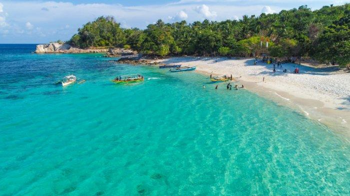
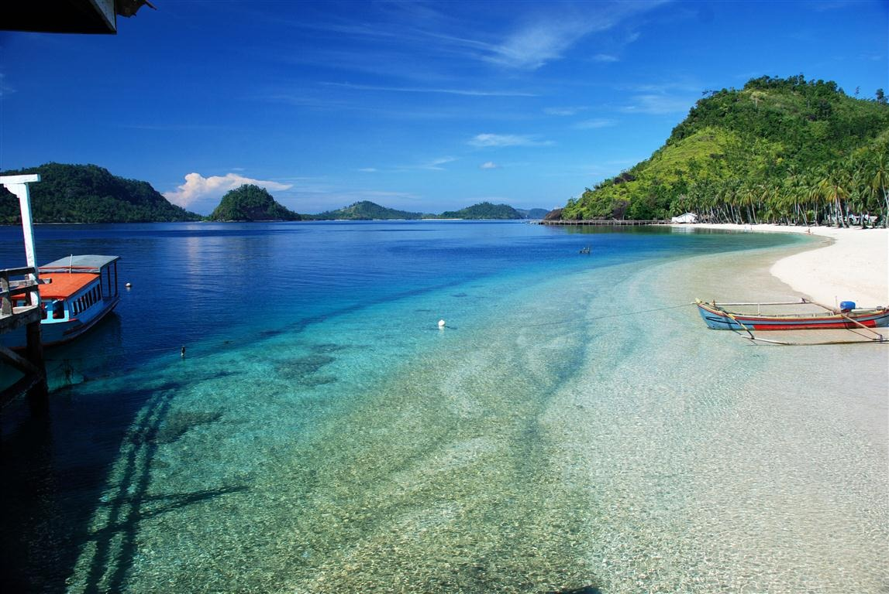

Kumpulan foto pilihan yang menampilkan objek wisata di Provinsi Lampung. Klik pada foto untuk melihat lebih lanjut.

Pantai Pasir Putih
Pantai Pasir Putih menawarkan keindahan klasik yang tak lekang oleh waktu. Hamparan pasir putihnya yang berpadu dengan air laut yang jernih dan tenang secara ideal untuk berenang, bermain air, atau sekadar bersantai menikmati pemandangan. Aksesnya yang mudah menjadikannya pilihan favorit untuk liburan keluarga atau sekadar melepas penat sejenak dari hiruk pikuk kota.

Teluk Kiluan
Teluk Kiluan adalah permata tersembunyi bagi pecinta alam dan petualang. Dikenal sebagai surga bagi lumba-lumba, teluk ini menyajikan kawanan mamalia laut yang ramah berenang bebas di habitat aslinya. Selain itu, keindahan pantainya yang eksotis, perairan yang jernih dengan gradasi warna menakjubkan menjadikan Teluk Kiluan pengalaman yang tak terlupakan bagi siapa pun yang ingin menyelami langsung ke laut, dan spot snorkeling yang menakjubkan.
{kind=link}
{kind=link}
{kind=link}
{kind=link}
{kind=link}